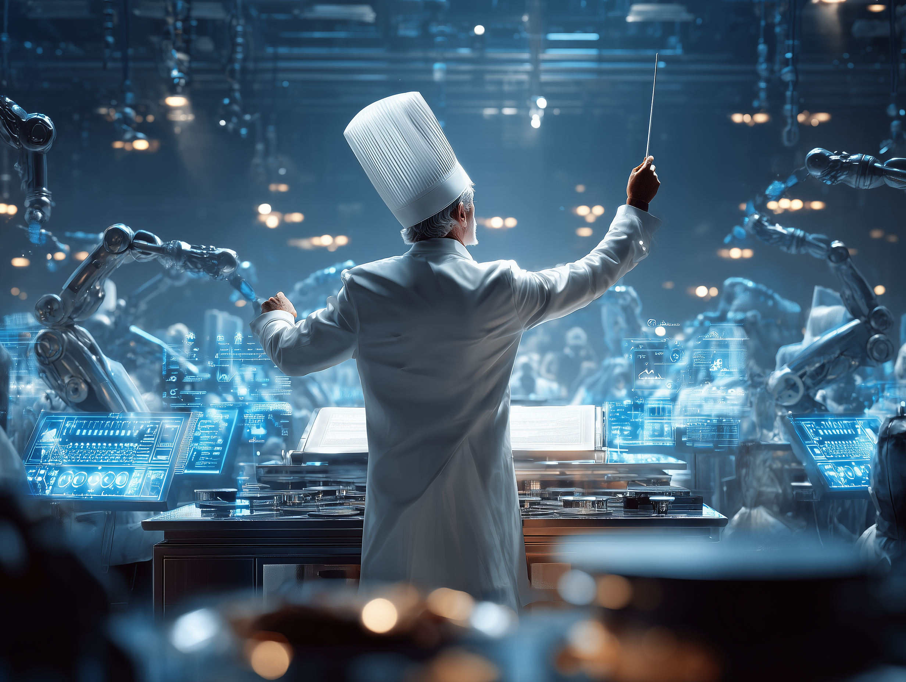

Kostenlose KI-Prozessanalyse
Marias persönliche
KI-Roadmap
Mehr Gäste, weniger Verwaltung — KI-Automatisierung für Ihr Restaurant oder Hotel.

Mehr Gäste, weniger Verwaltung — KI-Automatisierung für Ihr Restaurant oder Hotel.
Ihre Zeitfresser
Gastronomiebetriebe verlieren wöchentlich bis zu 17+ Stunden an administrativen Aufgaben — Zeit, die im Betrieb fehlt.
KI-Lösungen
Gezielte KI-Lösungen, direkt auf die größten Zeitfresser in Gastronomie & Hotellerie zugeschnitten.
Automatische Buchungsbestätigungen, Wartelistenverwaltung und Erinnerungen — komplett ohne manuelle Eingriffe.
KI antwortet professionell auf Google & TripAdvisor Bewertungen im Stil Ihres Hauses — täglich, konsistent.
Tagesmenü, Events und Angebote werden automatisch in Social Media und E-Mail-Newsletter gepublisht.
Ihr Potenzial
Realistische Kennzahlen auf Basis vergleichbarer Betriebe nach 3 Monaten Automatisierung.

Nächste Schritte
Konkrete nächste Schritte — von der ersten Analyse bis zur laufenden Automatisierung.
30-Minuten-Analyse Ihrer größten Zeitfresser — individuell, keine generischen Lösungen
Wir implementieren die erste Automatisierung innerhalb von 2 Wochen — messbare Ergebnisse ab Tag 1
Schritt für Schritt weitere Prozesse automatisieren — Sie behalten stets die Kontrolle
Jetzt handeln: Vereinbaren Sie noch diese Woche Ihr kostenloses Strategiegespräch mit ML Vision — und starten Sie Ihre persönliche Automatisierungsreise.
In einem kostenlosen 30-Minuten-Gespräch zeigen wir Ihnen, wie wir die ersten Automatisierungen in Ihrem Betrieb umsetzen — konkret und direkt umsetzbar.
Kostenloses Gespräch buchen